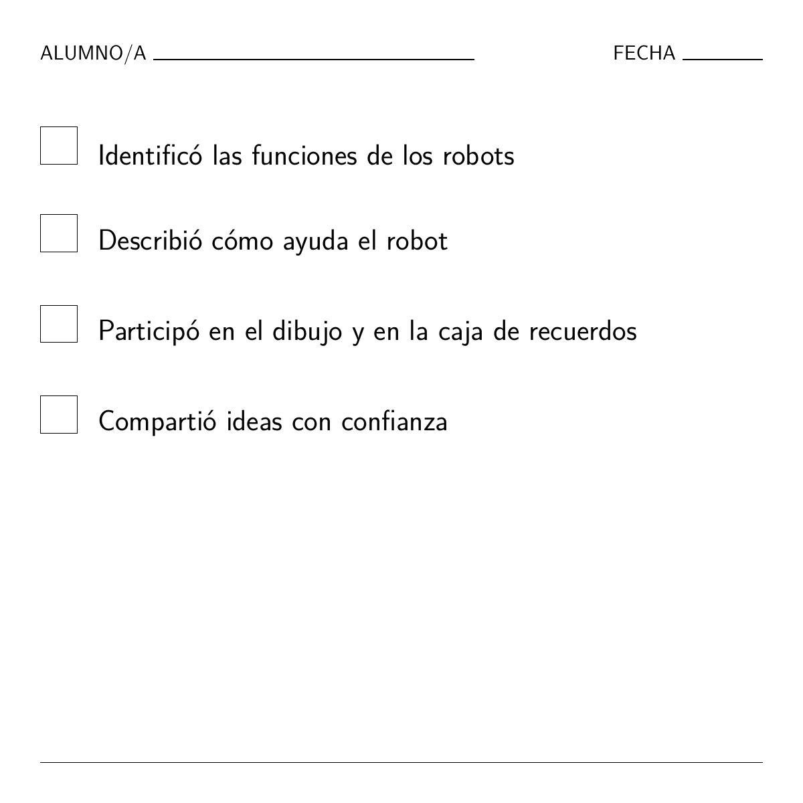

Cómo aprende la IA y resuelve problemas
En este taller, los niños y niñas de 4 a 7 años explorarán el mundo de los robots y la IA. Aprenderán que las máquinas son herramientas útiles, pero necesitan personas que les enseñen y les den instrucciones.
Recursos y descargas
Descarga las versiones PDF de este escenario o los anexos correspondientes.
Documentos de trabajo editables
Estos archivos editables se ofrecen como documentos de trabajo para docentes.
Grupo destinatario: 4 a 7 años
Duración de la actividad: 2,5 a 3 horas (formato modular)
Principales objetivos de aprendizaje:
- Comprender la IA: Ver la IA como una herramienta útil, no como magia.
- Personas y máquinas: Aprender que los robots necesitan personas que les ayuden a aprender.
- Curiosidad: Explorar ejemplos reales de asistentes con IA (aspiradores, altavoces inteligentes).
- Creatividad: Imaginar y dibujar un robot asistente personal.
Resultados de aprendizaje
El alumnado será capaz de:
CONOCIMIENTOS Y COMPRENSIÓN:
- Empezar a comprender qué es un robot o un asistente con IA.
- Aprender que la IA puede ayudar con las tareas, pero sigue necesitando personas.
- Explorar ejemplos reales de usos útiles de la IA.
COMPETENCIAS Y HABILIDADES:
- Narración de historias y conversación sobre tecnología.
- Participación en juegos de rol guiados para comprender cómo los robots siguen instrucciones.
- Dibujo y creatividad para expresar ideas.
ACTITUDES Y VALORES:
- Desarrollar la curiosidad por la tecnología.
- Reflexionar sobre las diferencias entre personas y máquinas.
- Ver la IA como una herramienta que debe utilizarse de forma responsable.
Dimensión europea / conexión con Erasmus+
- Alfabetización digital temprana: una introducción significativa a los conceptos tecnológicos.
- Pensamiento crítico: Animar a los niños y niñas a preguntarse: «¿Puede un robot hacer esto?»
- Inclusión: Utilizar ejemplos familiares para que la tecnología sea accesible a todos los niños y niñas.
1. Recursos y herramientas
Materiales necesarios:
- Marioneta o robot de juguete.
- Tarjetas imprimibles: «El robot acierta/se equivoca», «Las personas saben más».
- Papel de dibujo y lápices.
- Vídeo: robots en la vida cotidiana.
- Lista de comprobación para la evaluación (véase más abajo).
Enlaces útiles:
Materiales de apoyo para el aula:
- Utiliza una rúbrica de evaluación sencilla, una marioneta o un robot y Padlet u otro tablón para recoger las reflexiones finales de los niños y niñas.
2. Métodos de trabajo
- Narración de historias: «El robot que se equivocó».
- Juego de rol guiado: Representar las tareas de los robots.
- Dibujo y creatividad: Diseñar un robot asistente.
- Reflexión en grupo: Conversaciones en círculo.
Resumen de las actividades
| Fase | Duración | Actividad | Descripción |
|---|---|---|---|
| Introducción | 20 min | Hora del cuento | «El robot que se equivocó»: Conversar sobre por qué el robot se equivocó (por ejemplo, al poner zapatos en el frigorífico) y sobre cómo le ayudan las personas. |
| Investigación | 20–30 min | Asistentes reales con IA | Vídeo y votación: Ver vídeos de robots (aspiradores, reparto). Votar: «¿Puede un robot hacer esto solo o necesita a una persona?» |
| Creación | 30–40 min | Robot asistente y dibujo | Juego de clasificación: ¿Esta tarea es para un robot, una persona o ambos? Dibujo: Inventar tu propio robot asistente. |
| Reflexión | 20 min | Conversación en círculo | Compartir los dibujos. Conversar: «¿Qué pueden hacer los robots? ¿Qué hacen mejor las personas?» |
3. Introducción y motivación
Historia: el robot que se equivocó
Objetivo: Despertar la curiosidad y mostrar que los robots necesitan ayuda humana.
- El punto de partida: El docente presenta una marioneta robot que quiere ayudar, pero se confunde.
- La historia: El robot intenta limpiar la cocina, ¡pero usa champú en lugar de jabón! Pone los cubiertos en el congelador y la leche en el armario.
- Conversación: «¿Por qué se confundió el robot?» «¿Cómo saben más las personas?»
4. Investigación y aprendizaje
Explorar asistentes reales con IA
Vídeo: Ver «SciShow Kids: Robots Helping Humans» (o un vídeo similar).
Conversación:
- «¿Habéis visto un aspirador robot? ¿Puede encontrar vuestros calcetines perdidos?» (No, solo limpia.)
- «¿Puede un altavoz inteligente daros un abrazo?» (No, solo puede reproducir música.)
Actividad: Mostrar tarjetas con diferentes tareas. Los niños y niñas votan con el pulgar hacia arriba o hacia abajo: «¿Puede un robot hacer esto bien?»
5. Aplicación creativa
Actividad: ¿robot asistente o tarea humana?
Juego de clasificación: El docente muestra tarjetas con tareas (por ejemplo, «Ordenar la habitación», «Dar un abrazo», «Pintar un cuadro»). Los niños y niñas se desplazan a los rincones del aula señalados como Robot, Persona, o Ambos.
Tarea de dibujo: diseña tu robot
Los niños y niñas dibujan un robot que ayuda a alguien a hacer algo útil.
- Pregunta: «¿Qué hace bien vuestro robot?» (Por ejemplo, llevar objetos pesados.)
- Pregunta: «¿En qué necesita ayuda?» (Por ejemplo, saber adónde ir.)
6. Reflexión y evaluación
Conversación en círculo
Los niños y niñas comparten sus dibujos. La clase crea una «caja de recuerdos» con dibujos que muestran cómo les ha ayudado hoy la IA.
Lista de comprobación para la evaluación
El profesorado puede utilizar esta lista sencilla para observar la comprensión:


Esta obra está disponible bajo la Licencia Internacional Creative Commons Atribución 4.0.